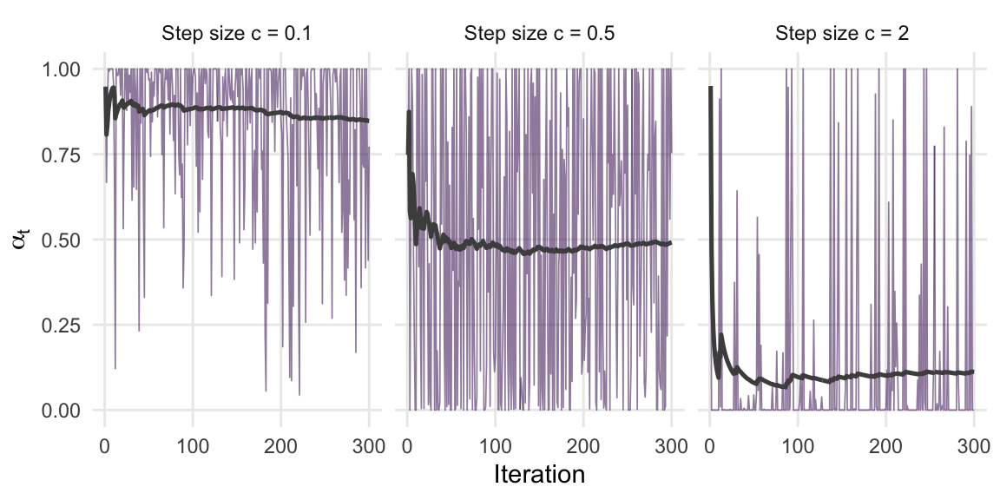
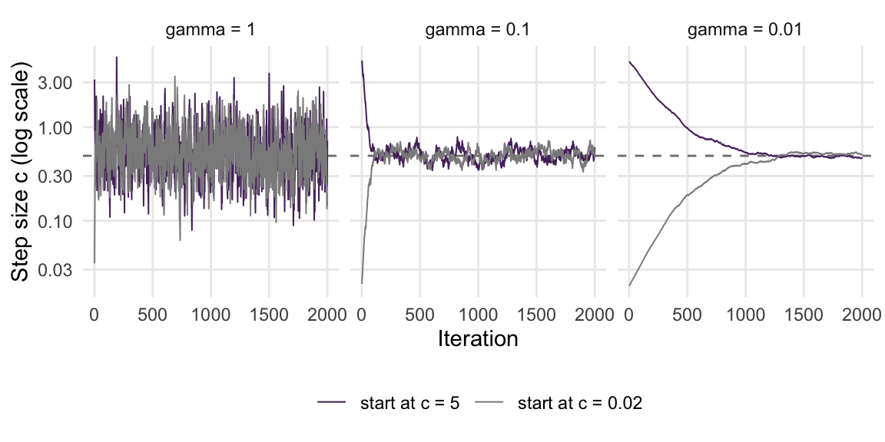
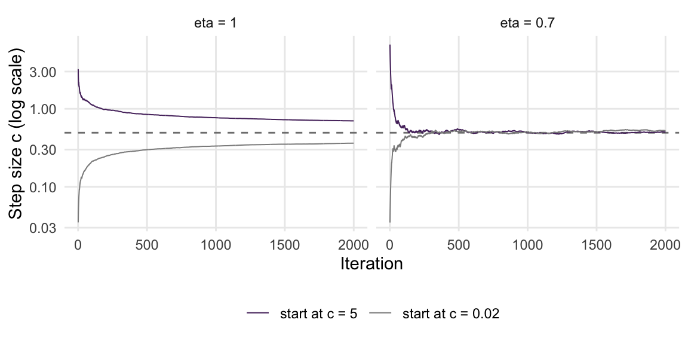
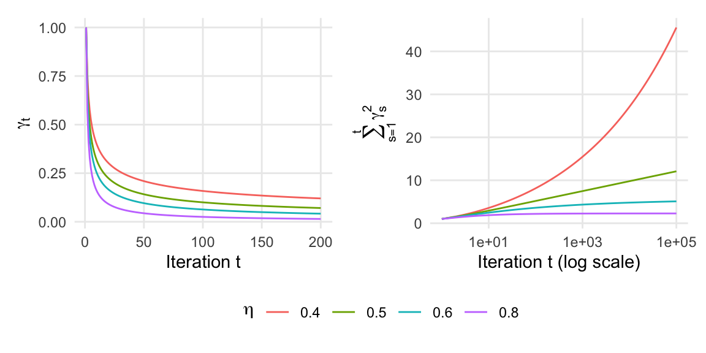
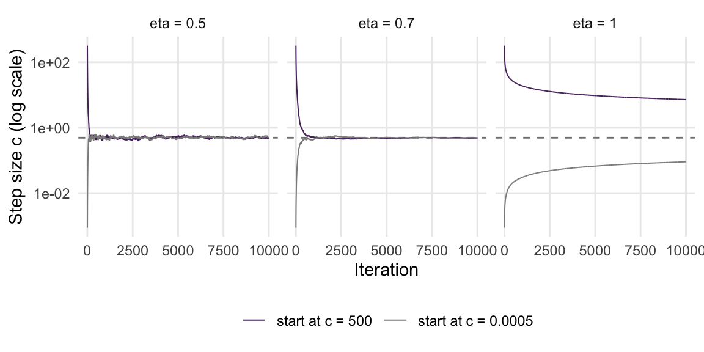
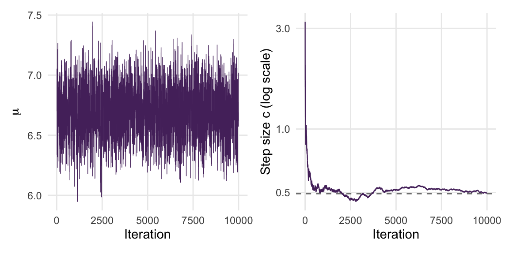
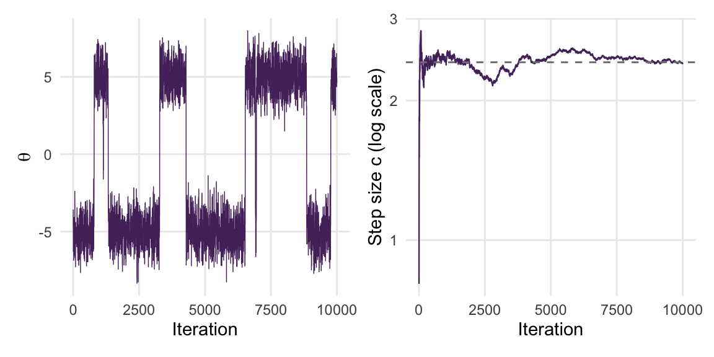
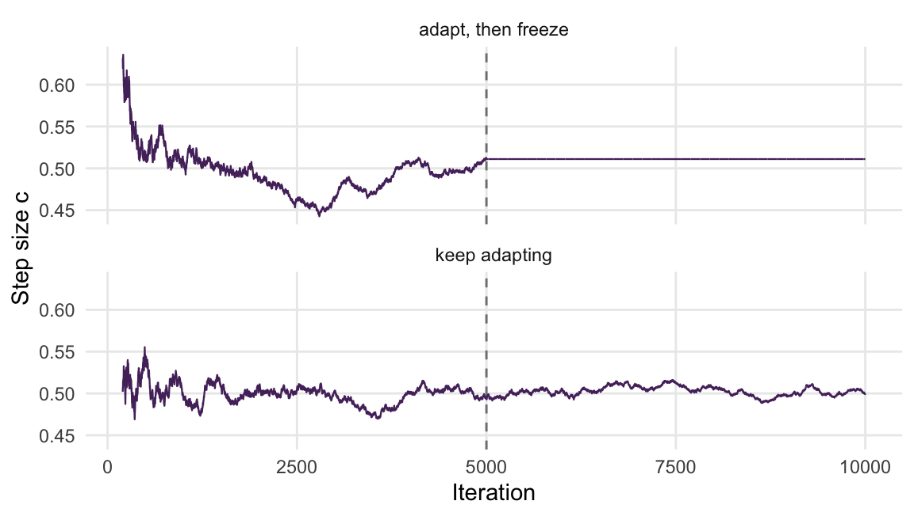
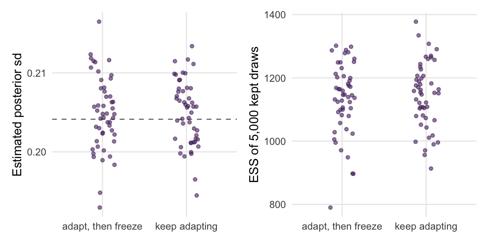

library(tidyverse)
library(posterior)
library(mvtnorm)6 Adaptive Metropolis
In Chapter 5, we introduced the Metropolis algorithm with a Normal proposal distribution centered at the current state of the Markov chain and with standard deviation, or step size, \(c\). The step size determines how efficiently the Markov chain generated by the Metropolis algorithm explores the target distribution. If it is too small, the Markov chain moves slowly and successive draws are highly correlated. If it is too large, proposals often land in regions where the target density is low and are rejected. We also learned that there is an optimal step size. For a one-dimensional Normal target, the optimal step size corresponds to an acceptance rate of approximately \(44\)%. Although this rate need not be optimal for other target distributions, it is a useful heuristic that often gives close-to-optimal efficiency. We will therefore use \(44\)% as our target acceptance rate for one-dimensional problems. However, we generally do not know which step size will produce this rate and must tune it for each application, which can be time-consuming.
In this chapter, you will learn about a stochastic optimization procedure known as Robbins–Monro, which we will use to adapt the step size \(c\) during sampling. The procedure adjusts the step size after every iteration, based on the acceptance probability of that iteration, and finds a suitable step size for the problem at hand on its own. We call the result the adaptive Metropolis algorithm. Its main advantage is that we no longer need to tune the step size by hand, and it applies, in principle, to any target distribution.
In this chapter, we will make use of the following packages:
Goals
- Explain why a larger step size lowers the acceptance rate of a random-walk Metropolis chain, and show that the acceptance rate is the long-run average of the acceptance probabilities \(\alpha_t\) the sampler computes at every iteration.
- Write the step-size update on the log scale, carry out a few updates by hand, and explain what the learning rate does.
- Explain why a constant learning rate leaves the step size fluctuating, and why a diminishing learning rate reduces these fluctuations.
- Describe the Robbins–Monro procedure, state its two conditions on the learning rate, and relate both to step-size adaptation.
- Implement an adaptive Metropolis sampler in R, check it on the examples of Chapter 5, and explain what the acceptance rate does and does not tell us about the chain.
- Compare continuous adaptation with adapting during warm-up and then freezing the step size, and explain why we use the latter approach in this book.
6.1 Adapting the step size
6.1.1 Step size and acceptance rate
Let’s return to the sleep survey from Chapter 5, where we modeled the hours of sleep of twenty first-year students using a \(\text{N}(\mu, 1^2)\) model and a \(\text{N}(7, 0.5^2)\) prior distribution for \(\mu\). The posterior is Normal with mean \(\mu_n \approx 6.69\) and standard deviation \(\tau_n \approx 0.20\) hours. We also found in Figure 5.10 that a step size of about \(0.5\) gives an acceptance rate of \(0.44\) and approximately maximizes the effective sample size. We recompute the posterior parameters and define the log posterior density here because we will use them throughout the chapter.
sleep_hours <- c(6.5, 7.2, 5.8, 6.9, 7.5, 6.1, 5.5, 7.0, 6.4, 8.1,
6.7, 5.9, 7.3, 6.2, 6.8, 7.7, 5.6, 6.3, 7.1, 6.0)
n <- length(sleep_hours)
tau2_n <- 1 / (1 / 0.5^2 + n / 1^2)
mu_n <- tau2_n * (7 / 0.5^2 + sum(sleep_hours) / 1^2)
log_posterior <- function(mu, y = sleep_hours) {
sum(dnorm(y, mean = mu, sd = 1, log = TRUE)) + # log likelihood
dnorm(mu, mean = 7, sd = 0.5, log = TRUE) # log prior
}In each iteration, the Metropolis algorithm either accepts or rejects the proposed value. We can record these decisions as \(1\) for acceptance and \(0\) for rejection. The acceptance rate is the average of these decisions. The algorithm never calculates this rate. Each decision is based on the probability of accepting the current proposal.
Suppose the chain is at \(\mu^{(t)}\) and proposes \(\mu^\star\). The Metropolis acceptance probability is \[ \alpha_t = \min\{1\text{, } r_t\}, \qquad r_t = \frac{f(\mu^\star \mid y)}{f(\mu^{(t)} \mid y)}. \] We call \(\alpha_t\) the acceptance probability of iteration \(t\). Because the proposed value is random, its acceptance probability \(\alpha_t\) is also random. The distribution of these acceptance probabilities depends on the target distribution and the proposal distribution, particularly its step size.
It is difficult to determine the distribution of the acceptance probabilities analytically, but we can investigate it by recording their values during Metropolis sampling. The resulting sequence \(\alpha_1, \alpha_2, \ldots\) is a stochastic process, just like the Markov chain itself, and we can examine its trace plot. The metropolis() function from Chapter 5 already computes the log density ratio needed to calculate \(\alpha_t\), but does not store the acceptance probability. The version below adds two lines, marked new, to calculate and record these probabilities. These values are included in the output, and the rest of the algorithm remains unchanged. We will use this version of metropolis() only in this section.
metropolis_alpha <- function(log_target, init, n_iter, step_size, ...) {
d <- length(init)
draws <- matrix(NA_real_, nrow = n_iter, ncol = d)
alpha <- numeric(n_iter) # new
current <- init
current_lp <- log_target(current, ...)
if (!is.finite(current_lp)) stop("log_target() is not finite at init")
n_accept <- 0
for (t in seq_len(n_iter)) {
proposal <- rnorm(d, mean = current, sd = step_size)
proposal_lp <- log_target(proposal, ...)
if (is.nan(proposal_lp)) stop("log_target() returned NaN")
alpha[t] <- exp(min(0, proposal_lp - current_lp)) # new
if (log(runif(1)) < proposal_lp - current_lp) {
current <- proposal
current_lp <- proposal_lp
n_accept <- n_accept + 1
}
draws[t, ] <- current
}
colnames(draws) <- if (d == 1) "theta" else paste0("theta_", seq_len(d))
list(
draws = as_tibble(draws) |>
mutate(iteration = seq_len(n_iter), alpha = alpha, .before = 1),
accept_rate = n_accept / n_iter
)
}Let’s examine the acceptance probabilities generated by metropolis_alpha for three step sizes: \(c = 0.1\), \(0.5\), and \(2\). For each step size, we start the chain at the posterior mean and examine the first 300 values of \(\alpha_t\).
set.seed(84735)
fits <- map(c(0.1, 0.5, 2), \(c) {
metropolis_alpha(log_posterior, init = mu_n, n_iter = 5000, step_size = c)
})
Figure 6.1 shows the three traces. With \(c = 0.1\), the acceptance probability is close to one most of the time, with occasional dips when a proposal has a lower target density than the current state. With \(c = 2\), acceptance probabilities are often close to zero, but occasionally reach much higher values. With \(c = 0.5\), they range across nearly the entire interval between zero and one. In all three panels, individual values of \(\alpha_t\) fluctuate considerably, but their running means become more stable as the number of iterations increases. Over the full run, the average acceptance probabilities are approximately 0.85, 0.44, and 0.13, respectively.
The running average of \(\alpha_t\) approaches the acceptance rate of the chain. Given a proposal, the decision to accept it is like a coin flip with probability \(\alpha_t\), so the fraction of accepted proposals and the average of \(\alpha_t\) estimate the same quantity. The average of \(\alpha_t\) is less noisy because it averages the acceptance probabilities rather than the outcomes of the coin flips. Let’s compare the two across a range of step sizes.
set.seed(84735)
step_grid <- c(0.05, 0.1, 0.2, 0.5, 1, 2, 5)
runs <- map(step_grid, \(c) {
metropolis_alpha(log_posterior, init = mu_n, n_iter = 5000, step_size = c)
})
tibble(step_size = step_grid,
mean_alpha = map_dbl(runs, \(fit) mean(fit$draws$alpha)),
accept_rate = map_dbl(runs, \(fit) fit$accept_rate))
#> # A tibble: 7 × 3
#> step_size mean_alpha accept_rate
#> <dbl> <dbl> <dbl>
#> 1 0.05 0.927 0.930
#> 2 0.1 0.847 0.846
#> 3 0.2 0.712 0.718
#> 4 0.5 0.441 0.442
#> 5 1 0.236 0.247
#> 6 2 0.127 0.129
#> 7 5 0.0527 0.052The two columns agree to within about a percentage point, and both decrease as the step size increases, from above \(0.9\) for the smallest step to about \(0.05\) for the largest. This agrees with the acceptance-rate curve in Figure 5.10. We can therefore adjust the step size to achieve a desired acceptance rate, such as our target acceptance rate of \(0.44\) for one-dimensional target distributions.
Adaptation uses this relationship. Think of the step size as a dial and the acceptance rate as a gauge. If the acceptance rate is too high, increase the step size; if it is too low, decrease it. In Chapter 5, we adjusted the step size by hand. In this chapter, we learn to let the sampler make these adjustments automatically.
Quiz yourself!
A Metropolis chain for the sleep posterior accepts \(80\)% of its proposals with step size \(c = 0.2\). Should we increase or decrease the step size to reach an acceptance rate of \(0.44\)? What if the chain accepts only \(10\)% of its proposals?
6.1.2 Turning the dial
After each iteration, the sampler has computed the acceptance probability \(\alpha_t\). We compare it with a target acceptance rate \(\alpha^\star\), which we set to \(0.44\) for now. If \(\alpha_t > \alpha^\star\), we increase the step size because the proposal was more likely to be accepted than desired, which means our steps are too timid. If \(\alpha_t < \alpha^\star\), we decrease the step size because the proposal was less likely to be accepted than desired, which means our steps are too bold.
A simple rule is to adjust the step size by a weighted difference between the acceptance probability and the target acceptance rate: \[ c_{t+1} = c_t + \gamma \, (\alpha_t - \alpha^\star), \] where \(\gamma > 0\) controls the size of the adjustment. This rule has two problems. First, it can produce a negative step size. For example, starting at \(c_t = 0.1\), a proposal with \(\alpha_t = 0\) and \(\gamma = 1\) gives \(c_{t+1} = 0.1 - 0.44 < 0\). Second, the same additive change has a different relative effect depending on the current step size. Increasing \(c\) from \(0.1\) to \(0.2\) doubles it, whereas increasing it from \(10\) to \(10.1\) changes it by only one percent. We therefore want changes that are proportional to the current step size, so that doubling has the same meaning whether we move from \(0.1\) to \(0.2\) or from \(1\) to \(2\).
Both problems disappear when we update the logarithm of the step size instead: \[ \log c_{t+1} = \log c_t + \gamma \, (\alpha_t - \alpha^\star). \tag{6.1}\] Since \(e^{a + b} = e^a e^b\), adding \(\gamma(\alpha_t - \alpha^\star)\) on the log scale is equivalent to multiplying the step size by \(e^{\gamma(\alpha_t - \alpha^\star)}\): \[ c_{t+1} = c_t \, e^{\gamma (\alpha_t - \alpha^\star)}. \] This factor is always positive, so the step size remains positive. It ranges from \(e^{-\gamma \alpha^\star}\) when \(\alpha_t = 0\) to \(e^{\gamma (1 - \alpha^\star)}\) when \(\alpha_t = 1\). With \(\gamma = 1\) and \(\alpha^\star = 0.44\), these factors are approximately \(0.64\) and \(1.75\), respectively. The adjustment is proportional to the current step size. For example, \(\alpha_t = 0\) reduces a step size of \(10\) to \(6.4\), but a step size of \(0.1\) to \(0.064\). The parameter \(\gamma\) is called the learning rate and determines how strongly each acceptance probability influences the next step size.
6.1.3 Four updates of step size by hand
Let’s carry out a few updates by hand to see the rule at work. We return to the sleep posterior and start with a step size of \(c_1 = 5\), which is ten times larger than the value we found earlier. We aim for \(\alpha^\star = 0.44\) and use \(\gamma = 1\). Suppose the chain is somewhere in the posterior region and the first four proposals have the acceptance probabilities listed in Table 6.1.
| Iteration \(t\) | Step size \(c_t\) | \(\log c_t\) | Acceptance probability \(\alpha_t\) | Change \(\gamma(\alpha_t - 0.44)\) | \(\log c_{t+1}\) | New step size \(c_{t+1}\) |
|---|---|---|---|---|---|---|
| 1 | 5.00 | 1.609 | 0.00 | \(-0.440\) | 1.169 | 3.22 |
| 2 | 3.22 | 1.169 | 0.02 | \(-0.420\) | 0.749 | 2.12 |
| 3 | 2.12 | 0.749 | 0.00 | \(-0.440\) | 0.309 | 1.36 |
| 4 | 1.36 | 0.309 | 1.00 | \(+0.560\) | 0.869 | 2.39 |
In the first iteration, the acceptance probability is \(0.00\), giving a discrepancy of \(-0.44\). The log step size decreases from \(\log 5 = 1.609\) to \(1.169\), so the step size becomes \(e^{1.169} = 3.22\). The second and third proposals also have low acceptance probabilities, reducing the step size further to \(1.36\). In the fourth iteration, the proposal has acceptance probability \(1\), increasing the step size by a factor of \(e^{0.56} = 1.75\) to \(2.39\).
Over these four iterations, the step size decreases from \(5\) to \(2.39\), but not every adjustment moves it in the right direction. Each \(\alpha_t\) is a noisy observation of the acceptance rate at the current step size. Rather than waiting for these observations to average out, the algorithm adjusts the step size after every iteration. We therefore need many iterations for the adjustments to settle around a suitable value.
6.1.4 Step-size adaptation with a fixed learning rate
We have seen how to adjust the step size after a single iteration. But what happens when we apply this rule repeatedly? Does the step size approach a suitable value, and how much does it continue to fluctuate? To investigate these questions, we add the update rule to the metropolis() function from Chapter 5.
The modified function stores the log step size as log_c, so the Normal proposal uses exp(log_c). After each iteration, Step 4 applies Equation 6.1 to update the step size. The acceptance probability \(\alpha_t = \min\{1, r_t\}\) is calculated from the log density ratio as \(\exp(\min\{0, \log r_t\})\). This calculation is made regardless of whether the proposal was accepted or rejected.
The function also records the step size after each iteration so that we can examine how it changes. The learning rate can be supplied as a vector with one value per iteration or as a single value, which is then used throughout the run. In this section, we use a constant learning rate. We call the function adaptive_metropolis_experiment(), because it is a tool for studying learning-rate schedules rather than the finished algorithm. The finished adaptive_metropolis() comes once the experiments have settled the learning rate.
adaptive_metropolis_experiment <- function(log_target, init, n_iter, step_size = 1,
target_accept = 0.44, learning_rate = 0.1, ...) {
d <- length(init)
gamma <- rep_len(learning_rate, n_iter) # one learning rate per iteration
draws <- matrix(NA_real_, nrow = n_iter, ncol = d)
step_sizes <- numeric(n_iter)
n_accept <- 0
current <- init
current_lp <- log_target(current, ...)
log_c <- log(step_size)
for (t in seq_len(n_iter)) {
proposal <- rnorm(d, mean = current, sd = exp(log_c)) # 1. propose
proposal_lp <- log_target(proposal, ...)
log_r <- proposal_lp - current_lp # 2. compare
if (log(runif(1)) < log_r) { # 3. accept ...
current <- proposal
current_lp <- proposal_lp
n_accept <- n_accept + 1
}
draws[t, ] <- current # ... or stay and record
alpha_t <- exp(min(0, log_r)) # 4. alpha_t = min(1, r), and
log_c <- log_c + gamma[t] * (alpha_t - target_accept) # turn the dial
step_sizes[t] <- exp(log_c)
}
colnames(draws) <- if (d == 1) "theta" else paste0("theta_", seq_len(d))
list(
draws = as_tibble(draws) |> mutate(iteration = seq_len(n_iter), .before = 1),
accept_rate = n_accept / n_iter,
step_sizes = tibble(iteration = seq_len(n_iter), step_size = step_sizes)
)
}Let’s see how well the adaptation works. We run the sampler on the sleep posterior from two deliberately poor step sizes: \(c = 5\), which is ten times larger than the value we found earlier, and \(c = 0.02\), which is twenty-five times smaller. For each starting value, we try three learning rates: \(\gamma = 1\), \(0.1\), and \(0.01\). All six chains start at the posterior mean, so differences in their behavior are not caused by different initial states.

Figure 6.2 shows the six step-size trajectories. All move toward the dashed line at \(c = 0.49\), which corresponds to an acceptance rate of \(0.44\). None of the runs needed to know the posterior standard deviation in advance. However, the learning rate makes a substantial difference. With \(\gamma = 1\), the step size approaches the target quickly but continues to fluctuate considerably. With \(\gamma = 0.01\), the adjustments are much smaller, and the chain starting at \(0.02\) needs almost a thousand iterations to approach the target. The intermediate learning rate \(\gamma = 0.1\) provides a compromise between speed and stability.
But which learning rate should we choose? That depends partly on how far the initial step size is from its target, which we do not know in advance. We set out to remove the step size from the list of numbers that must be tuned by hand, only to replace it with the learning rate.
Quiz yourself!
An adaptive Metropolis chain uses a constant learning rate \(\gamma = 1\) and a target acceptance rate \(\alpha^\star = 0.44\). At iteration \(100\), its step size is \(c_{100} = 0.5\). What are the largest and smallest possible values of \(c_{101}\)?
6.1.5 Diminishing adaptation
We want the learning rate to be large when the step size is still far from its target, so that each adjustment is substantial. As the step size approaches its target, however, we want smaller adjustments so that individual acceptance probabilities no longer cause large fluctuations. We therefore need a learning rate \(\gamma_t\) that decreases with the iteration number.
A familiar example is the running mean. Suppose we estimate the mean of a sequence of observations \(x_1, x_2, \ldots\), updating our estimate after each one. The running mean \(m_t\) of the first \(t\) observations can be computed from the previous mean by \[ m_t = m_{t-1} + \frac{1}{t} (x_t - m_{t-1}), \] which has the same form as Equation 6.1. The estimate moves toward the latest observation by a fraction \(1/t\) of the difference. The first observation receives full weight, the hundredth receives a weight of \(1/100\), and the adjustments become smaller as more observations accumulate.
We can use the same idea for our adaptive step-size updates. Instead of keeping the learning rate fixed, we let it decrease with the iteration number: \[ \gamma_t = t^{-\eta}, \qquad \eta > 0, \] where \(\eta = 1\) gives the weights of the running mean, while smaller values of \(\eta\) make the learning rate decrease more slowly. Our update rule becomes \[ \log c_{t+1} = \log c_t + \gamma_t \, (\alpha_t - \alpha^\star), \qquad \gamma_t = t^{-\eta}. \tag{6.2}\] This is called diminishing adaptation. The sampler continues to adjust the step size, but the adjustments become smaller over time.
Our adaptive_metropolis_experiment() function already accepts a vector of learning rates, so we can implement this rule by passing (1:n_iter)^(-eta) without changing the function. Let’s compare \(\eta = 1\) with the more slowly decreasing learning rate \(\eta = 0.7\), starting from the same two step sizes as before.

Figure 6.3 shows that both learning rates produce much smaller fluctuations than the constant learning rates we investigated earlier. However, they differ in how quickly the step sizes approach their target. With \(\eta = 0.7\), both chains reach the dashed line within about a hundred iterations and remain close to it. With \(\eta = 1\), the learning rate decreases so quickly that neither chain reaches the target within the \(5{,}000\) iterations. The step sizes appear to settle, but at values that are still too large or too small.
Diminishing adaptation therefore addresses the problem of persistent fluctuations. But we also learned that the choice of \(\eta\) matters. If the learning rate decreases too quickly, the step size may take a very long time to reach its target. If it decreases too slowly, the fluctuations may persist.
6.2 The Robbins–Monro procedure
Robbins and Monro studied how to make adjustments based on noisy observations and established two conditions on the learning rate that can ensure convergence (Robbins & Monro, 1951). Our step-size adaptation follows the same principle. We want to find the step size \(c\) that produces an average acceptance probability of \(0.44\), but each observed acceptance probability \(\alpha_t\) is a noisy indication of whether the current step size is too large or too small. By adjusting the step size based on these observations, we can approach the desired acceptance rate.
The Robbins–Monro conditions
For our step-size adaptation, the update rule is \[ \log c_{t+1} = \log c_t + \gamma_t \, (\alpha_t - \alpha^\star). \] The average acceptance probability decreases as the step size increases, and the individual acceptance probabilities lie between zero and one, so their variance is bounded. Robbins and Monro established two conditions on the learning rates that can ensure convergence when the observations satisfy the assumptions of their procedure: \[ \sum_{t=1}^\infty \gamma_t = \infty \qquad \text{and} \qquad \sum_{t=1}^\infty \gamma_t^2 < \infty. \]
The two conditions address different problems. The first, \(\sum_t \gamma_t = \infty\), requires the learning rates to decrease slowly enough that their sum remains unbounded. Otherwise, the adjustments may become too small before the step size reaches its target. For example, with \(\gamma_t = 1/t^2\), the sum converges to \(\pi^2/6 \approx 1.64\). Because \(|\alpha_t-\alpha^\star|\leq 1\), the total possible adjustment to the log step size is bounded by this sum. If the initial log step size is sufficiently far from its target, the algorithm cannot reach it.
The second condition, \(\sum_t \gamma_t^2 < \infty\), requires the learning rates to decrease sufficiently quickly to control the accumulated effect of noise. With a constant learning rate, every acceptance probability continues to produce an adjustment of the same magnitude, explaining the persistent fluctuations we observed in Figure 6.2. Together, the conditions require the learning rate to decrease, but neither too quickly nor too slowly.
For our choice \(\gamma_t = t^{-\eta}\), both conditions hold when \(0.5 < \eta \leq 1\). The first sum diverges when \(\eta \leq 1\), while the second sum, \(\sum_t t^{-2\eta}\), converges when \(\eta > 0.5\). Figure 6.4 illustrates how different choices of \(\eta\) affect the learning rates and the accumulated squared learning rates.

Unlike the step size \(c\), which depends on the posterior distribution, the permissible range of \(\eta\) does not depend on the problem at hand. We can therefore choose a default exponent within this range rather than tuning it separately for every analysis. The choice still affects how quickly the step size approaches its target, as we saw in Figure 6.3.
6.2.1 What the theory promises, and what it does not
The Robbins–Monro conditions tell us which learning rates are suitable for convergence, but not how quickly convergence occurs. We saw this in Figure 6.3, where \(\eta = 1\) produced very slow adjustments. The problem becomes more pronounced when the initial step size is far from its target. To illustrate this, we repeat the experiment with starting values \(c = 500\) and \(c = 0.0005\), approximately a thousand times too large and too small. We compare \(\eta = 0.7\) and \(\eta = 1\), which satisfy both Robbins–Monro conditions, with the boundary value \(\eta = 0.5\), which does not satisfy the second condition.

Figure 6.5 shows the practical consequences of the learning-rate choice. With \(\eta = 1\), the step sizes remain far from their target after \(10{,}000\) iterations. Although \(\sum_t 1/t\) diverges, it grows only logarithmically, so the adjustments become very slow. With \(\eta = 0.5\), the step sizes approach their target much faster, but continue to fluctuate. The intermediate exponent \(\eta = 0.7\) approaches the target relatively quickly and produces smaller fluctuations. We therefore use \(\eta = 0.7\) as the default in our adaptive Metropolis function.
6.2.2 The adaptive Metropolis function
The experiments have shown why the learning rate should decrease over time. The Robbins–Monro conditions are satisfied by \(\gamma_t = t^{-\eta}\) when \(0.5 < \eta \leq 1\), and \(\eta = 0.7\) provided a good compromise between speed and stability in our experiments. We can therefore build this schedule into the sampler. The function below replaces the vector of learning rates in adaptive_metropolis_experiment() with an exponent eta, which defaults to \(0.7\). It also restricts the step size to the range specified by step_range, by default \(10^{-6}\) to \(10^{6}\). Everything else, including the output, remains unchanged.
adaptive_metropolis <- function(log_target, init, n_iter, step_size = 1,
target_accept = 0.44, eta = 0.7,
step_range = c(1e-6, 1e6), ...) {
d <- length(init)
gamma <- seq_len(n_iter)^(-eta) # diminishing learning rate
draws <- matrix(NA_real_, nrow = n_iter, ncol = d)
step_sizes <- numeric(n_iter)
n_accept <- 0
current <- init
current_lp <- log_target(current, ...)
log_c <- log(step_size)
for (t in seq_len(n_iter)) {
proposal <- rnorm(d, mean = current, sd = exp(log_c)) # 1. propose
proposal_lp <- log_target(proposal, ...)
log_r <- proposal_lp - current_lp # 2. compare
if (log(runif(1)) < log_r) { # 3. accept ...
current <- proposal
current_lp <- proposal_lp
n_accept <- n_accept + 1
}
draws[t, ] <- current # ... or stay and record
alpha_t <- exp(min(0, log_r)) # 4. alpha_t = min(1, r), and
log_c <- log_c + gamma[t] * (alpha_t - target_accept) # turn the dial
log_c <- min(max(log_c, log(step_range[1])), log(step_range[2])) # 5. keep c in range
step_sizes[t] <- exp(log_c)
}
colnames(draws) <- if (d == 1) "theta" else paste0("theta_", seq_len(d))
list(
draws = as_tibble(draws) |> mutate(iteration = seq_len(n_iter), .before = 1),
accept_rate = n_accept / n_iter,
step_sizes = tibble(iteration = seq_len(n_iter), step_size = step_sizes)
)
}With the default learning-rate schedule, the function can now adapt the step size on the sleep posterior without requiring us to specify a learning rate.
set.seed(84735)
fit_default <- adaptive_metropolis(log_posterior, init = mu_n, n_iter = 10000, step_size = 5)
c(final_step_size = tail(fit_default$step_sizes$step_size, 1),
accept_rate = fit_default$accept_rate)
#> final_step_size accept_rate
#> 0.4913372 0.4399000In the classical Robbins–Monro procedure, each observation fluctuates around an expected value determined by the current setting. In our sampler, the acceptance probability \(\alpha_t\) also depends on the current state of the Markov chain, which in turn depends on its previous states. The classical theorem therefore does not apply directly, but the theory has been extended to account for this dependence (Andrieu & Moulines, 2006; Andrieu & Thoms, 2008). The resulting convergence conditions concern the behavior of the Metropolis chain, the relation between the step size and the acceptance rate, and the learning-rate schedule. In particular, the step size must remain within a bounded range, which the function enforces through step_range. The default bounds are deliberately wide, and reaching either one suggests that the adaptation needs closer inspection.
As with any Markov chain Monte Carlo method, theoretical convergence does not tell us whether a particular run is sufficiently long. The step-size trajectory is a useful diagnostic. Running the adaptation from different initial step sizes shows whether the results depend on their starting values. Similar trajectories are reassuring, but do not establish convergence. We return to the properties of the resulting draws in Section 6.4.
6.3 Checking on earlier examples
In Chapter 5, we investigated several target distributions beyond the Normal sleep posterior: a posterior under a Cauchy prior, a bimodal mixture, and a bivariate Normal with a correlation of \(0.9\). We used hand-picked step sizes for these examples. We now revisit them with the adaptive sampler, using the default \(\eta = 0.7\) and ten thousand iterations, and compare the second half of each run with our earlier results.
6.3.1 The Cauchy posterior
The posterior under the Cauchy prior is nearly Normal, as Figure 5.6 showed, so we expect a step size similar to that for the Normal prior.
log_posterior_cauchy <- function(mu, y = sleep_hours) {
sum(dnorm(y, mean = mu, sd = 1, log = TRUE)) +
dcauchy(mu, location = 7, scale = 0.5, log = TRUE)
}
set.seed(84735)
fit_cauchy <- adaptive_metropolis(log_posterior_cauchy, init = 6.7, n_iter = 10000,
step_size = 5)
c(final_step_size = tail(fit_cauchy$step_sizes$step_size, 1),
accept_rate = fit_cauchy$accept_rate,
ess_second_half = ess_basic(fit_cauchy$draws$theta[5001:10000]))
#> final_step_size accept_rate ess_second_half
#> 0.4963285 0.4379000 1230.5715839
Figure 6.6 shows that the adapted step size approaches \(0.5\), close to what we found for the Normal posterior. The acceptance rate is also close to its target. The sampler found this step size without knowing the posterior’s width.
6.3.2 The bimodal mixture
The bimodal mixture presents a more difficult case. Each mode has a standard deviation of one, so the results of Chapter 5 suggest a step size of about \(2.4\) for a chain exploring only one mode. We start in the left mode, as before.
log_bimodal <- function(theta) {
log(0.5 * dnorm(theta, -5, 1) + 0.5 * dnorm(theta, 5, 1))
}
set.seed(84735)
fit_bimodal <- adaptive_metropolis(log_bimodal, init = -5, n_iter = 10000, step_size = 0.5)
fit_bimodal_large <- metropolis(log_bimodal, init = -5, n_iter = 5000, step_size = 5)
second_half <- fit_bimodal$draws$theta[5001:10000]
c(final_step_size = tail(fit_bimodal$step_sizes$step_size, 1),
accept_rate = fit_bimodal$accept_rate,
mode_switches = sum(diff(sign(second_half)) != 0),
mode_switches_step_5 = sum(diff(sign(fit_bimodal_large$draws$theta)) != 0))
#> final_step_size accept_rate mode_switches
#> 2.402886 0.441200 5.000000
#> mode_switches_step_5
#> 189.000000
The adaptation found a step size close to \(2.4\) and an acceptance rate close to \(0.44\), but the chain explores the posterior poorly. In Figure 6.7, it moves between modes only 5 times in the second half of the run, compared with 189 times for the hand-picked step size of \(5\) from Chapter 5. The fraction of draws in the right mode is 0.51, but this estimate depends on very few transitions and would be highly sensitive to the particular run. The adaptive sampler found a step size suited to exploring one mode because most acceptance probabilities reflected movements within that mode. An acceptance rate of \(0.44\) is a useful target for a unimodal, Normal-like distribution, but not necessarily for a bimodal one.
6.4 Keep adapting, or adapt and freeze?
The Metropolis algorithm of Chapter 5 uses a fixed proposal distribution, and we showed that its transition kernel preserves the posterior distribution. Our adaptive sampler changes the proposal step size based on the history of the chain, so that argument no longer applies directly. This does not mean that adaptive Metropolis is invalid, but it does mean that convergence requires additional justification.
6.4.1 Two approaches to adaptation
One possibility is to keep adapting, but ever more gently, as we have done throughout this chapter. Roberts & Rosenthal (2007) established convergence results for adaptive Markov chains under two conditions. The first is diminishing adaptation, which requires changes in the transition kernel to vanish over time. Our learning rate \(\gamma_t = t^{-\eta}\) makes the step-size adjustments progressively smaller. The second is containment, which prevents the algorithm from spending increasingly long periods in configurations where the chain mixes poorly. This condition is more difficult to verify, but together the two conditions provide a theoretical basis for continued adaptation.
An alternative is to adapt during warm-up, then freeze. We adapt for \(n_{\text{adapt}}\) iterations, fix the resulting step size, discard the warm-up draws from posterior inference, and continue with ordinary Metropolis updates. Once the step size is frozen, the convergence theory of Chapter 5 applies to the subsequent chain. This strategy is also used for step-size adaptation in software such as Stan (Carpenter et al., 2017).
The approaches differ in an important respect. Continued adaptation allows the sampler to keep correcting its step size, whereas freezing commits it to the value reached during warm-up. On the other hand, once the step size is frozen, the sampler no longer requires the additional convergence theory of adaptive Markov chains.
6.4.2 Comparing the two approaches
We can compare the two strategies using adaptive_metropolis_experiment(). Freezing the step size amounts to setting the learning rate to zero after warm-up, so both strategies can be implemented with the same function. We use \(\eta = 0.7\), ten thousand iterations, and a warm-up of five thousand for the frozen chain, starting both from \(c = 5\).
set.seed(84735)
gamma_t <- (1:10000)^(-0.7)
gamma_freeze <- c((1:5000)^(-0.7), rep(0, 5000))
fit_frozen <- adaptive_metropolis_experiment(log_posterior, init = mu_n, n_iter = 10000,
step_size = 5, learning_rate = gamma_freeze)
fit_continued <- adaptive_metropolis_experiment(log_posterior, init = mu_n, n_iter = 10000,
step_size = 5, learning_rate = gamma_t)
Figure 6.9 shows the two trajectories after the first two hundred iterations. The frozen chain’s step size is constant after iteration \(5{,}000\). The continued chain’s step size keeps changing, but by iteration \(5{,}000\) the learning rate is \(5000^{-0.7} \approx 0.003\), so even a rejection changes the step size by only about a tenth of a percent. The two trajectories are therefore difficult to distinguish on the scale of the posterior.
We can compare the posterior mean, standard deviation, and effective sample size from the second half of each run with the known posterior distribution.
summarize_second_half <- function(fit) {
kept <- fit$draws$theta[5001:10000]
tibble(mean = mean(kept), sd = sd(kept), ess = ess_basic(kept))
}
bind_rows(`adapt, then freeze` = summarize_second_half(fit_frozen),
`keep adapting` = summarize_second_half(fit_continued),
.id = "strategy") |>
bind_rows(tibble(strategy = "exact", mean = mu_n, sd = sqrt(tau2_n), ess = NA))
#> # A tibble: 3 × 4
#> strategy mean sd ess
#> <chr> <dbl> <dbl> <dbl>
#> 1 adapt, then freeze 6.68 0.206 1287.
#> 2 keep adapting 6.69 0.208 1121.
#> 3 exact 6.69 0.204 NAOne pair of runs could agree by chance, so we repeat the comparison fifty times with each strategy and examine the estimated posterior standard deviations and effective sample sizes.
set.seed(84735)
replicates <- expand_grid(replicate = 1:50, strategy = c("adapt, then freeze", "keep adapting")) |>
mutate(fit = map(strategy, \(s) {
adaptive_metropolis_experiment(log_posterior, init = mu_n, n_iter = 10000, step_size = 5,
learning_rate = if (s == "adapt, then freeze") gamma_freeze else gamma_t)
}),
summary = map(fit, summarize_second_half)) |>
select(-fit) |>
unnest(summary)
replicates |>
group_by(strategy) |>
summarize(mean_of_sd = mean(sd), sd_of_sd = sd(sd), mean_ess = mean(ess))
#> # A tibble: 2 × 4
#> strategy mean_of_sd sd_of_sd mean_ess
#> <chr> <dbl> <dbl> <dbl>
#> 1 adapt, then freeze 0.205 0.00466 1134.
#> 2 keep adapting 0.205 0.00412 1146.
Figure 6.10 shows similar posterior standard deviation estimates and effective sample sizes for both strategies. On this posterior, continuing adaptation offers little apparent advantage over freezing after five thousand iterations. But what happens when adaptation has not yet found a useful step size?
6.4.3 What if adaptation goes wrong?
Freezing too early can leave the sampler with a poor step size. To illustrate this, we start from \(c = 500\) and allow only twenty iterations of adaptation before fixing the step size.
set.seed(84735)
fit_early <- adaptive_metropolis_experiment(log_posterior, init = mu_n, n_iter = 10000,
step_size = 500,
learning_rate = c((1:20)^(-0.7), rep(0, 9980)))
c(frozen_step_size = tail(fit_early$step_sizes$step_size, 1),
accept_rate = fit_early$accept_rate,
ess = ess_basic(fit_early$draws$theta[21:10000]))
#> frozen_step_size accept_rate ess
#> 45.03470 0.00700 50.90944The step size freezes at about \(45\), roughly a hundred times too large. The chain accepts fewer than one proposal in a hundred, and almost ten thousand iterations provide the information of only about fifty independent draws. The adaptation has clearly failed to find a useful step size.
But there is an important distinction between a poorly tuned sampler and an incorrect one. Once the step size is frozen, the algorithm is ordinary Metropolis. A step size that is too small produces highly correlated draws, while one that is too large produces many rejections. Neither changes the stationary distribution of the fixed-step sampler. Even when adaptation fails to find a good step size, freezing it leaves an algorithm that targets the correct posterior distribution, although it may sample very inefficiently.
Continued adaptation avoids committing permanently to the step size reached after twenty iterations. It can keep correcting the step size, but its validity depends on the additional convergence conditions discussed earlier. Thus, the two approaches differ not only in how they respond to poor adaptation, but also in what is needed to establish their correctness.
6.4.4 The final adaptive Metropolis function
For the rest of this book, we use the adapt-then-freeze strategy. Its main advantage is that the sampling phase uses an ordinary Metropolis algorithm, whose properties we already understand. The disadvantage is that freezing too early can leave us with an inefficient sampler. The step-size trajectory helps us judge whether adaptation had settled before it was stopped, and the diagnostics of Chapter 4 remain necessary to assess the resulting draws.
We therefore extend our adaptive_metropolis() function with an argument n_adapt. It adapts for the first n_adapt iterations, by default half the run, and then freezes the step size. Its default target acceptance rate is \(0.44\) for one parameter and \(0.234\) for more. The function retains the full trajectory, including warm-up, but calculates the reported acceptance rate from the iterations after adaptation stops. Only those later draws should be used for posterior inference.
adaptive_metropolis <- function(log_target, init, n_iter, step_size = 1,
target_accept = NULL, eta = 0.7,
n_adapt = floor(n_iter / 2),
step_range = c(1e-6, 1e6), ...) {
d <- length(init)
if (is.null(target_accept)) target_accept <- if (d == 1) 0.44 else 0.234
draws <- matrix(NA_real_, nrow = n_iter, ncol = d)
step_sizes <- numeric(n_iter)
accepted <- logical(n_iter)
current <- init
current_lp <- log_target(current, ...)
log_c <- log(step_size)
for (t in seq_len(n_iter)) {
proposal <- rnorm(d, mean = current, sd = exp(log_c)) # 1. propose
proposal_lp <- log_target(proposal, ...)
log_r <- proposal_lp - current_lp # 2. compare
if (log(runif(1)) < log_r) { # 3. accept ...
current <- proposal
current_lp <- proposal_lp
accepted[t] <- TRUE
}
draws[t, ] <- current # ... or stay and record
if (t <= n_adapt) { # 4. Robbins-Monro update
alpha_t <- exp(min(0, log_r)) # alpha_t = min(1, r)
log_c <- log_c + t^(-eta) * (alpha_t - target_accept)
log_c <- min(max(log_c, log(step_range[1])), log(step_range[2])) # keep c in range
}
step_sizes[t] <- exp(log_c)
}
keep <- if (n_adapt < n_iter) (n_adapt + 1):n_iter else seq_len(n_iter)
colnames(draws) <- if (d == 1) "theta" else paste0("theta_", seq_len(d))
list(
draws = as_tibble(draws) |> mutate(iteration = seq_len(n_iter), .before = 1),
accept_rate = mean(accepted[keep]),
step_sizes = tibble(iteration = seq_len(n_iter), step_size = step_sizes)
)
}One call, with a starting value and the number of iterations, now replaces the manual step-size tuning of Chapter 5.
set.seed(84735)
fit_sleep <- adaptive_metropolis(log_posterior, init = 5, n_iter = 10000)
c(accept_rate = fit_sleep$accept_rate,
frozen_step_size = tail(fit_sleep$step_sizes$step_size, 1),
ess = ess_basic(fit_sleep$draws$theta[5001:10000]))
#> accept_rate frozen_step_size ess
#> 0.4330000 0.5152966 1268.9684308The sampler started at \(\mu = 5\), well outside the posterior region, with the default step size of \(1\). It arrived at a frozen step size of 0.52 and an acceptance rate of 0.43, without any information about the posterior beyond its log density. The effective sample size of the retained draws can be compared with the hand-tuned results of Chapter 5.
Checking the adaptive Metropolis sampler
After adaptation, assess the retained draws using the usual MCMC diagnostics from Chapter 4, including trace plots, \(\widehat{R}\) across multiple chains, and effective sample sizes.
If the diagnostics indicate poor mixing or insufficient precision, investigate the step-size adaptation. Warning signs include acceptance rates far from their targets or substantially different final step sizes across chains. The step-size trajectories can then help determine whether adaptation was stopped too early.
A well-adapted step size does not guarantee efficient sampling, as the bimodal and correlated examples have shown. If the step size has settled but the chain still mixes poorly, longer adaptation alone is unlikely to solve the problem.
Quiz yourself!
A student runs adaptive_metropolis() with n_adapt = n_iter and eta = 0, so that the step size keeps adapting with a constant learning rate. The student then reports posterior summaries from all iterations. What are the two problems with this approach, and can the diagnostics of Chapter 4 reliably detect them?
6.5 Chapter summary
This chapter extended the Metropolis algorithm of Chapter 5 with automatic step-size adaptation.
- The acceptance probability \(\alpha_t = \min\{1, r_t\}\) of a single iteration is a noisy indication of the acceptance rate. For our random-walk Metropolis sampler, the acceptance rate decreases as the step size increases. A larger step gives a lower acceptance rate and a smaller step a higher one, so the step size can be adjusted toward a target acceptance rate.
- Turning the dial means adjusting the log step size according to the discrepancy between \(\alpha_t\) and the target \(\alpha^\star\), using \(\log c_{t+1} = \log c_t + \gamma_t(\alpha_t - \alpha^\star)\). The log scale keeps the step size positive and makes equal adjustments correspond to equal multiplicative changes. A constant learning rate creates a trade-off between rapid adaptation and persistent fluctuations.
- Diminishing adaptation uses a learning rate \(\gamma_t = t^{-\eta}\) that decreases with the iteration number, like the weights of a running mean. The adjustments become smaller over time, so the step size settles while corrections remain possible.
- The update follows the principle of Robbins–Monro stochastic approximation. Its learning-rate conditions, \(\sum_t \gamma_t = \infty\) and \(\sum_t \gamma_t^2 < \infty\), hold for \(\gamma_t = t^{-\eta}\) exactly when \(0.5 < \eta \leq 1\). We used \(\eta = 0.7\) as a practical compromise between the speed and stability of adaptation.
- A suitable acceptance rate does not guarantee efficient sampling. Adaptation worked well on the roughly Normal posterior but did not resolve poor exploration of the bimodal mixture or the strongly correlated bivariate Normal. Adaptation replaces manual step-size tuning, not the need for MCMC diagnostics.
- Continuous adaptation and adapting then freezing are two ways to use the step-size updates. Continuous adaptation can be valid under additional convergence conditions. Freezing the step size after warm-up returns the sampler to ordinary Metropolis, where a poorly chosen step size affects efficiency rather than the stationary distribution. We use this approach for posterior sampling in the rest of the book.
6.6 Quiz answers
Quiz 1. An acceptance rate of \(0.80\) is above the target, so proposals are accepted more often than desired. The steps are too small, and the step size should be increased. An acceptance rate of \(0.10\) is below the target, so the steps are too large and the step size should be decreased. The acceptance rate responds to changes in the step size in a known direction, which makes adaptation possible.
Quiz 2. The log step size changes by \(\gamma(\alpha_{100} - 0.44)\) with \(\gamma = 1\). The largest change is \(+0.56\), when the proposal is certain to be accepted, and the smallest is \(-0.44\), when it is certain to be rejected. The step size at iteration \(101\) therefore lies between \(0.5 \, e^{-0.44} \approx 0.32\) and \(0.5 \, e^{0.56} \approx 0.88\). A constant learning rate of \(1\) lets a single observation change the step size by a factor of up to \(1.75\), however close it already is to its target.
Quiz 3. First, with a constant learning rate, adaptation never diminishes, so the usual convergence guarantees for adaptive Metropolis do not apply. There is no guarantee that the draws follow the posterior distribution. Second, the summaries include the early iterations, when the step size may still be poorly tuned and the chain may not yet have reached the posterior region. Trace plots and \(\widehat{R}\) across multiple chains may reveal this problem, but they cannot reliably establish that the sampler targets the correct distribution. A chain sampling from the wrong distribution can still appear to mix well. These problems are addressed by using a diminishing learning rate and, in our implementation, freezing the step size before collecting posterior draws.
6.7 Exercises
6.7.1 Conceptual exercises
Exercise 6.1 (Turning the dial) An adaptive sampler starts with step size \(c_1 = 0.1\) and aims for \(\alpha^\star = 0.44\). The first four proposals have acceptance probabilities \(1.00\), \(0.95\), \(1.00\), and \(0.70\).
- Carry out the four updates of Equation 6.1 by hand with a constant learning rate \(\gamma = 1\), in the layout of Table 6.1, and report \(c_5\).
- Repeat part a with the diminishing learning rate \(\gamma_t = t^{-0.7}\). Which version moves the step size further, and why?
- In which direction does the step size move in both cases, and why does that make sense given the acceptance probabilities?
- Repeat part a with \(\alpha^\star = 0.234\). Which target produces the larger step size after four updates, and will that remain true in the long run?
Exercise 6.2 (Learning rates) For each learning-rate sequence, state whether it satisfies \(\sum_t \gamma_t = \infty\), whether it satisfies \(\sum_t \gamma_t^2 < \infty\), and what would happen to the adaptive step size in the long run if it were used.
- \(\gamma_t = 0.1\) for all \(t\).
- \(\gamma_t = 1/t\).
- \(\gamma_t = 1/t^2\).
- \(\gamma_t = 1/\sqrt{t}\).
Exercise 6.3 (Starting from the wrong end) The final adaptive_metropolis() keeps the step size within step_range, by default between \(10^{-6}\) and \(10^{6}\).
- A run starts with
step_size = 1e9on the sleep posterior. What is the step size after the first update, whatever the first acceptance probability turns out to be, and why? - From that point on, how many consecutive rejections does it take, with \(\gamma_t = t^{-0.7}\), to bring the step size below \(100\)? Use \(\alpha^\star = 0.44\) and the fact that the log step size moves by at most \(\gamma_t \alpha^\star\) per rejection.
- Two chains on the same posterior are started at step sizes \(10^{-4}\) and \(10^{4}\) and adapted for \(5{,}000\) iterations. Both report an acceptance rate of \(0.44\) after the freeze, but their frozen step sizes differ by a factor of three. Give two possible explanations, say what you would look at to tell them apart, and say which one the acceptance rate alone could never reveal.
Exercise 6.4 (Reading a step-size trajectory) A colleague shows you the step-size trajectory of an adaptive chain. It climbs steadily for the whole \(5{,}000\)-iteration warm-up and has not leveled off when the step size is frozen; the acceptance rate after the freeze is \(0.05\).
- Give two different explanations for a trajectory that keeps climbing, one about the starting step size and one about the target.
- For each explanation, say what you would look at to confirm it and what you would change.
- Why does an acceptance rate of \(0.05\) after the freeze not contradict the fact that the sampler was aiming for \(0.44\)?
6.7.2 Practical exercises
Exercise 6.5 (Gamma-Poisson without the tuning) Return to the model of Exercise 5.5, a Poisson rate \(\lambda\) with a \(\text{Gamma}(3, 1)\) prior and data \(y = (2, 0, 4, 1, 3, 2)\), whose posterior is \(\text{Gamma}(3 + \sum y_i, 1 + n)\). Use the log posterior from that exercise, which returns \(-\infty\) for negative \(\lambda\).
- Run
adaptive_metropolis_experiment()with a constant learning rate of \(1\) and of \(0.01\), for \(5{,}000\) iterations from \(c = 50\) and from \(c = 0.05\). Plot the four step-size trajectories on a logarithmic axis and report the standard deviation of the log step size over the last thousand iterations of each. - Repeat with \(\gamma_t = t^{-0.7}\). Where do the trajectories settle, and how does the step size compare with the one you chose by hand in Exercise 5.5?
- Run the final
adaptive_metropolis()for \(10{,}000\) iterations with the default settings and compare the posterior mean, standard deviation, and the effective sample size of the kept draws with the exact Gamma posterior and with your hand-tuned chain of Exercise 5.5.
Exercise 6.6 (How long to warm up?) Use the final adaptive_metropolis() on the sleep posterior, \(10{,}000\) iterations, starting step size \(500\).
- Run with
n_adaptequal to \(50\), \(500\), and \(5{,}000\). For each, plot the step-size trajectory, and report the frozen step size, the acceptance rate, and the effective sample size of the draws after the freeze. - Which of the three trajectories had leveled off when it was frozen? Could you have told from the acceptance rate alone?
- Run with
n_adapt = n_iter, so that the chain keeps adapting. Compare its effective sample size over the second half of the run with the three frozen chains. What does the comparison say about the cost of a warm-up that is too short, and about the cost of one that is longer than necessary? - Repeat part a from a starting step size of \(0.005\). For which values of
n_adaptdo the frozen step sizes agree with those of part a? What does a disagreement tell you that the acceptance rate does not?
Exercise 6.7 (Two modes, one acceptance rate) Return to the bimodal target log_bimodal().
- Run
adaptive_metropolis()for \(20{,}000\) iterations from \(-5\) withtarget_acceptequal to \(0.44\), \(0.25\), and \(0.10\). Report the frozen step sizes, the number of times each chain crosses zero after the freeze, and the fraction of kept draws above zero. - Which target gives the best exploration of the two modes, and why is it not \(0.44\)?
- Run two chains with
target_accept = 0.44, one from \(-5\) and one from \(5\), and compute \(\widehat{R}\) on the kept draws. Does it catch the problem? Repeat with the best target of part b.
6.7.3 Applied exercises
Exercise 6.8 (Ghosts and age, without the tuning) Return to the logistic regression of Exercise 5.9 for belief in ghosts as a function of centered and scaled age in the pulse_of_the_nation data, with independent \(\text{N}(0, 1)\) priors on \(\beta_0\) and \(\beta_1\).
- Run
adaptive_metropolis()for \(20{,}000\) iterations fromc(0, 0)with the default settings. Report the frozen step size, the acceptance rate, and the effective sample sizes of both coefficients. Compare with the step size you chose by hand in Exercise 5.9. - Rerun with
target_accept = 0.44. Which target gives the larger effective sample sizes for this two-parameter posterior, and what does the difference say about the flatness of the efficiency curve? - Report a \(95\)% posterior credible interval for \(\beta_1\) and compare it with the one you obtained with
rstanin Exercise 5.9.
Exercise 6.9 (Two ADHD symptoms) The ADHD data in the bgms package contain binary symptom indicators for 355 children. Take distract as the outcome and avoid as the predictor, and fit the logistic regression \(\text{logit}\, P(\texttt{distract}_i = 1) = \beta_0 + \beta_1 \texttt{avoid}_i\) with independent \(\text{N}(0, 2^2)\) priors on both coefficients.
- Write the log posterior for \(\boldsymbol{\beta} = (\beta_0, \beta_1)\).
- Sample with
adaptive_metropolis()for \(20{,}000\) iterations and report the posterior mean and a \(95\)% credible interval for \(\beta_1\), and the effective sample size of each coefficient. - Sample the same posterior with
metropolis()using step sizes \(0.05\), \(0.2\), and \(1\). Compare the effective sample sizes with part b. How many hand-tuning runs did the adaptive sampler save you? - The two coefficients are negatively correlated in the posterior. Center the predictor by replacing
avoidwithavoid - mean(avoid)and rerun part b. What happens to the correlation, the adapted step size, and the effective sample sizes?